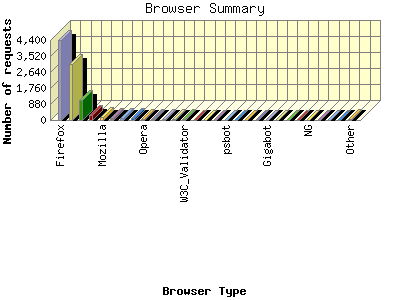

Report generated by Analog 6.0 and Report Magic 2.21
|
Web Server Statistics for "Harish Narayanan (hnarayan) - September 2005" Report generated by Analog 6.0 and Report Magic 2.21 |
The Browser Summary identifies the most popular web browsers used to visit
this site.
Browsers are broken down by recognized categories such as
Netscape Navigator/Communicator, Microsoft Internet Explorer, WebTV, Opera
and the like. Within each category is also a subgroup by version number
such as 'MSIE 5.0' or 'Netscape 4.5'.
This report shows all results. This report is sorted by number of requests.


| Browser Type | Number of requests | Number of bytes transferred | Percentage of the bytes | Percentage of the requests | |
|---|---|---|---|---|---|
| 1. | Firefox | 4,390 | 140.996 MB | 27.20% | 44.77% |
| Firefox/1 | 4,352 | 140.351 MB | 27.08% | 44.39% | |
| Firefox/0 | 38 | 659.654 KB | 0.12% | 0.39% | |
| 2. | MSIE | 3,061 | 145.350 MB | 28.04% | 31.22% |
| MSIE/6 | 3,018 | 140.177 MB | 27.04% | 30.78% | |
| MSIE/5 | 43 | 5.173 MB | 1.00% | 0.44% | |
| 3. | Netscape (compatible) | 1,099 | 36.816 MB | 7.10% | 11.21% |
| 4. | msnbot | 280 | 11.047 MB | 2.13% | 2.86% |
| msnbot/1 | 280 | 11.047 MB | 2.13% | 2.86% | |
| 5. | Mozilla | 180 | 4.883 MB | 0.94% | 1.84% |
| Mozilla/1 | 180 | 4.883 MB | 0.94% | 1.84% | |
| 6. | Safari | 136 | 10.573 MB | 2.04% | 1.39% |
| Safari/312 | 116 | 9.974 MB | 1.92% | 1.18% | |
| Safari/412 | 20 | 613.370 KB | 0.12% | 0.20% | |
| 7. | Googlebot | 109 | 10.903 MB | 2.10% | 1.11% |
| Googlebot/2 | 109 | 10.903 MB | 2.10% | 1.11% | |
| 8. | Googlebot-Image | 88 | 0.000 B | 0.00% | 0.90% |
| 9. | Opera | 79 | 2.686 MB | 0.52% | 0.81% |
| Opera/8 | 63 | 2.128 MB | 0.41% | 0.64% | |
| Opera/7 | 16 | 571.807 KB | 0.11% | 0.16% | |
| 10. | ia_archiver | 46 | 2.089 MB | 0.40% | 0.47% |
| 11. | mozilla | 39 | 66.908 MB | 12.91% | 0.40% |
| mozilla/5 | 39 | 66.908 MB | 12.91% | 0.40% | |
| 12. | Konqueror | 34 | 640.983 KB | 0.12% | 0.35% |
| Konqueror/3 | 32 | 627.132 KB | 0.12% | 0.33% | |
| Konqueror/2 | 2 | 13.852 KB | 0.00% | 0.02% | |
| 13. | W3C_Validator | 34 | 270.932 KB | 0.05% | 0.35% |
| W3C_Validator/1 | 34 | 270.932 KB | 0.05% | 0.35% | |
| 14. | Scooter | 27 | 310.848 KB | 0.06% | 0.28% |
| Scooter/3 | 27 | 310.848 KB | 0.06% | 0.28% | |
| 15. | Netscape | 26 | 599.819 KB | 0.11% | 0.27% |
| Netscape/7 | 23 | 582.244 KB | 0.11% | 0.23% | |
| Netscape/4 | 3 | 17.575 KB | 0.00% | 0.03% | |
| 16. | Jigsaw | 24 | 159.861 KB | 0.03% | 0.24% |
| Jigsaw/2 | 24 | 159.861 KB | 0.03% | 0.24% | |
| 17. | psbot | 22 | 502.812 KB | 0.10% | 0.22% |
| psbot/0 | 22 | 502.812 KB | 0.10% | 0.22% | |
| 18. | Galeon | 19 | 554.541 KB | 0.10% | 0.19% |
| Galeon/1 | 19 | 554.541 KB | 0.10% | 0.19% | |
| 19. | http: | 19 | 130.050 KB | 0.03% | 0.19% |
| http://www | 19 | 130.050 KB | 0.03% | 0.19% | |
| 20. | Yahoo-MMCrawler | 10 | 0.000 B | 0.00% | 0.10% |
| 21. | Gigabot | 6 | 97.128 KB | 0.02% | 0.06% |
| Gigabot/2 | 6 | 97.128 KB | 0.02% | 0.06% | |
| 22. | envolk[ITS]spider | 6 | 10.922 KB | 0.00% | 0.06% |
| envolk[ITS]spider/1 | 6 | 10.922 KB | 0.00% | 0.06% | |
| 23. | Gaisbot | 6 | 7.630 KB | 0.00% | 0.06% |
| Gaisbot/3 | 6 | 7.630 KB | 0.00% | 0.06% | |
| 24. | NutchCVS | 6 | 19.232 KB | 0.00% | 0.06% |
| NutchCVS/0 | 6 | 19.232 KB | 0.00% | 0.06% | |
| 25. | NG | 5 | 40.891 KB | 0.01% | 0.05% |
| NG/2 | 5 | 40.891 KB | 0.01% | 0.05% | |
| 26. | libwww-perl | 5 | 9.160 KB | 0.00% | 0.05% |
| libwww-perl/5 | 5 | 9.160 KB | 0.00% | 0.05% | |
| 27. | Camino | 4 | 2.608 MB | 0.50% | 0.04% |
| Camino/0 | 4 | 2.608 MB | 0.50% | 0.04% | |
| 28. | Wget | 4 | 79.441 MB | 15.33% | 0.04% |
| Wget/1 | 4 | 79.441 MB | 15.33% | 0.04% | |
| 29. | Clushbot | 4 | 7.281 KB | 0.00% | 0.04% |
| Clushbot/3 | 4 | 7.281 KB | 0.00% | 0.04% | |
| 30. | Microsoft Data Access Internet Publishing Provider Protocol Discovery | 3 | 0.000 B | 0.00% | 0.03% |
| 31. | Exabot NG | 3 | 0.000 B | 0.00% | 0.03% |
| 32. | ConveraMultiMediaCrawler | 2 | 401.430 KB | 0.08% | 0.02% |
| 33. | AnswerBus (http: | 2 | 54.010 KB | 0.01% | 0.02% |
| AnswerBus (http://www | 2 | 54.010 KB | 0.01% | 0.02% | |
| 34. | ichiro | 2 | 175.688 KB | 0.03% | 0.02% |
| ichiro/1 | 2 | 175.688 KB | 0.03% | 0.02% | |
| 35. | findlinks | 2 | 9.203 KB | 0.00% | 0.02% |
| findlinks/0 | 2 | 9.203 KB | 0.00% | 0.02% | |
| 36. | Jakarta Commons-HttpClient | 2 | 31.604 KB | 0.01% | 0.02% |
| Jakarta Commons-HttpClient/3 | 2 | 31.604 KB | 0.01% | 0.02% | |
| 37. | ActiveBookmark | 2 | 3.664 KB | 0.00% | 0.02% |
| ActiveBookmark/1 | 2 | 3.664 KB | 0.00% | 0.02% | |
| 38. | webcollage | 2 | 3.141 KB | 0.00% | 0.02% |
| webcollage/1 | 2 | 3.141 KB | 0.00% | 0.02% | |
| 39. | aipbot | 2 | 6.396 KB | 0.00% | 0.02% |
| aipbot/1 | 2 | 6.396 KB | 0.00% | 0.02% | |
| 40. | Microsoft URL Control - 6.00.8862 | 1 | 10.111 KB | 0.00% | 0.01% |
| 41. | nicebot | 1 | 12.679 KB | 0.00% | 0.01% |
| 42. | NetResearchServer | 1 | 1.820 KB | 0.00% | 0.01% |
| NetResearchServer/3 | 1 | 1.820 KB | 0.00% | 0.01% | |
| 43. | Metaspinner | 1 | 1.820 KB | 0.00% | 0.01% |
| Metaspinner/0 | 1 | 1.820 KB | 0.00% | 0.01% | |
| 44. | KDDI-CA31 UP.Browser | 1 | 4.623 KB | 0.00% | 0.01% |
| KDDI-CA31 UP.Browser/6 | 1 | 4.623 KB | 0.00% | 0.01% | |
| 45. | SecretBrowser | 1 | 1.832 KB | 0.00% | 0.01% |
| SecretBrowser/007 | 1 | 1.832 KB | 0.00% | 0.01% | |
| 46. | Lynx | 1 | 10.072 KB | 0.00% | 0.01% |
| Lynx/2 | 1 | 10.072 KB | 0.00% | 0.01% | |
| 47. | InternetArchive | 1 | 1.820 KB | 0.00% | 0.01% |
| InternetArchive/0 | 1 | 1.820 KB | 0.00% | 0.01% | |
| 48. | umai | 1 | 10.111 KB | 0.00% | 0.01% |
| umai/0 | 1 | 10.111 KB | 0.00% | 0.01% | |
| 49. | wume_crawler | 1 | 4.602 KB | 0.00% | 0.01% |
| wume_crawler/1 | 1 | 4.602 KB | 0.00% | 0.01% | |
| 50. | DataFountains | 1 | 1.820 KB | 0.00% | 0.01% |
| DataFountains/DMOZ | 1 | 1.820 KB | 0.00% | 0.01% | |
| 51. | Windows-Media-Player | 1 | 21.113 KB | 0.00% | 0.01% |
| 52. | NutchOSU-VLIB | 1 | 1.820 KB | 0.00% | 0.01% |
| NutchOSU-VLIB/0 | 1 | 1.820 KB | 0.00% | 0.01% | |
| 53. | Pompos | 1 | 1.820 KB | 0.00% | 0.01% |
| Pompos/1 | 1 | 1.820 KB | 0.00% | 0.01% | |
| 54. | ConveraCrawler | 1 | 4.598 KB | 0.00% | 0.01% |
| ConveraCrawler/0 | 1 | 4.598 KB | 0.00% | 0.01% | |
This report was generated on October 5, 2005 09:21.
Report time frame September 1, 2005 00:02 to September 30, 2005 23:47.
| Web statistics report produced by: | |
 Analog 6.0 Analog 6.0 |  Report Magic 2.21 Report Magic 2.21 |